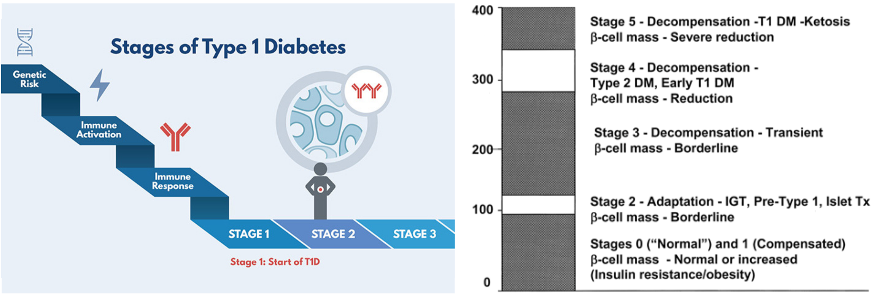
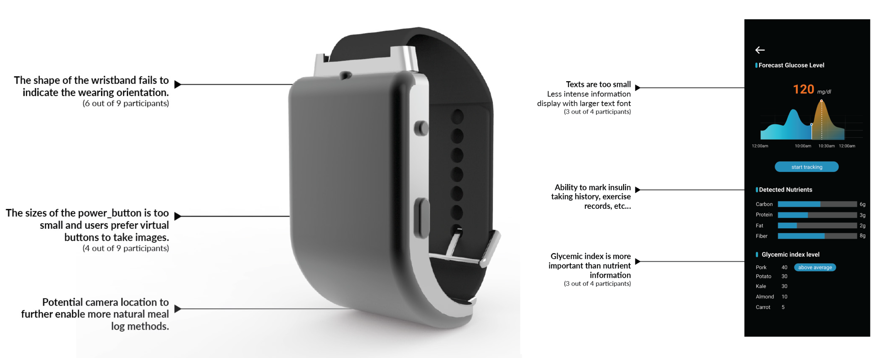

Wristband for the Diabetics
Intro
When my grandfather was still with us, he was a diabetic. He had to take different medicines after each meal and had to measure his glucose level using a small needle. As he got older, sometimes he cannot remember what he has eaten but he hasn't. Diet manamagement has been an untold pain for him l when he was alive. As a family member and a designer, I wanna do something to reduce the pain for people like my grandfather.
The user-friendly meal log methods greatly improves users’ willingness to use the product. users confirms that using mobile apps to get diet suggestions or information feels time-consuming, especially for the diabetics who can use it three times a day. Having a wristband and a curved screen to enable them to view it feels much easier than the mobile apps on the market, which leads to a higher acceptance level of the product.

Process
Through my early research, I discovered that the diet management goal is to keep glucose level in a target range and avoid big swings that cause symptoms like faint or dizziness. But when they eat food, their glucose level will rise.

Research
Diabetes and its progression
Diabetes mellitus is a major health concern in the United States. There are two main type of diabetes, Type 1 (10%) and Type 2 (90%). It is discovered that among all types of diabetes management methods, diet has been treated as a corner stone. There are multiple resources provided to diabetics to manage their diet. Patient self-monitoring of blood glucose (SMBG) and A1C are available to health care providers and patients to assess the effectiveness and safety of the different management plan on glycemic control.
User Research
Online observation; Expert & User Interview
I observed 10/99 diabetes’ online communities related with diet management. A nutrient management Ph.D. student was interviewed to learn more about expert opinions on diet management to control glucose level. 2 diabetes caregivers, a Type2 diabetic, a Type1 diabetic are recruited to understand their current behaviors and challenges when monitoring diet.

User Pain Point
It can take a year for the newly diagnosed diabetics to know how to eat to keep their glucose level within the safe range, even for those who have diet management resources or glucose monitoring devices.
While newly diagnosed diabetics have a hard time knowing what to eat and how much to eat, diabetics who have been diagnosed for a longer time often form their own way of estimating how specific food can influence their glucose level. It proves that users are building the connection between diet management and glucose level to guide their eating behaviors. This reveals a real world solution that fits the users’ mental model. While none of the current product helps to monitor a in-time glucose level or forcast a glucose level, users now need to go through a long and painful process to acheive this goal. This can be a potential opportunity that this project can help.

Design Direction
Design Hypothesis
Being able to accurately know how specific food impact their glucose level before eating can help newly diagnosed diabetics to change their eating behaviors and manage their diet.

Technology Support
GluOracle Algorithm is able to forcast glucose level based on meal logs， Image processing enables more intuitive meal log process

User Persona
One of our solutions is to eliminate user-client interaction. Requesting a DVS headset through a smart kiosk, the target users can feel more independent than relying on anyone in theaters. However, since we leveraged on current DVS headsets, the rate of error still remains the same, which means it is still very likely that users will have a less immersive movie experience when they fix the DVS headset problems.

Product Form Research
To determine a suitable product form, 10 different products that help the people to form new eating behaviors are gathered, including mobile apps like Evernote Food, a physical box like Amazon Meal Kits, small robot companions like Fridgeezoo 24 Fridge Pet Pal or Moti. These products gives clues on what real world experiences are already accepted by users. This activity helps to discover a wide product scope that this project can leverage on through relying on users’ past experiences.

Using Scenarios
Based on the storyboards that I draw, our team analyzed the strength and weakness in terms of how well it solved the two main pain points. Also potential obstacles to ship to ideas are also mentioned in the following chart. Through the analysis, we agreed that the last concept: An app that users can request DVS, is our next step design direction.

Service Blueprint
Based on the storyboards that I draw, our team analyzed the strength and weakness in terms of how well it solved the two main pain points. Also potential obstacles to ship to ideas are also mentioned in the following chart. Through the analysis, we agreed that the last concept: An app that users can request DVS, is our next step design direction.


Design Iteration
Camera location influences the posture that users use.
Through sketching, it is discovered that where the camera located have a big influence on the performance of the wristband, as it influence the way how information is being input, one of the key pain points.

Design the look of the wristband display
After designing several shape of the wristband, understanding users’ preference and criteria is important. To collect such user feedback, all the sketches were presented to users to let them choose their favorite ones. (They can choose multiple ones.) After their choices, questions like “ why do you choose this one?” “What quality are you looking for from these watches?” were asked.As a result, most of the participants prefer a square shape compared with a circle watch case. Keywords they used to describe their preference include stableness, clarity of the images and comfortable. Thus, a squared shape is determined as the shape of the form of the final product.

Posture can affect the quality of picture taken
A pilot testing using a mobile phone was conducted to understand how camera angles and height can influence the quality of the image.

To discover what is the most comfortable posture when users are taking pictures, The first posture they would use is to lift arms a little bit higher. 3/5 users think it is the most intuitive way to take a picture. In terms of button, they think a virtual button is more preferred than aphysical button since it allows them to view the image they have taken and take actions quickly.

The first posture they would use is to twisting their arms (2 out of 5 participants). Discriptions mentioned include “intuitive”, “easy” and “comfortable”; however, one problem that is discovered is that users cannot view the the wristband display clearly.

Second Round Ideation: Design For the Postures


Final Concept Model and Rendering


Interface Design
Scroll to View More

Main Flow Design
Scan flow is one of the most important flow for users to go through as it defines how users are going to log their meals. Instructions on how to scan are provided. Estimated Glucose level are marked as the most important information on the showcase page to indicate if the users’ glucose level will be at a same range. Glycemix index which defines how quickly the blood glucose level rises is another key information that users use to define if they can eat certain food.

Future Blue Print
Create Smarter Healthcare and Diet Management Eco-System
In the future, it can be envisioned that the Integrated Wristband designed in this project can be one of these IOT devices and connect with them to enable more using scenarios.

"Having the information always there and the easy access is life changing. It can help diabetics to manage their diabetes."
from a diabetic
User Testing
Testing Methods
9 participants (5 non-diabetics and 4 diabetics) were invited to place the 3D printed wristband onto their wrist to test if it fits. Three different sizes of wristbands are provided to them. Users’ thoughts were collected through a think-aloud protocol as well as a post-task question “How do you think it fits your wrist size, 5 means the most fit, 1 means the least fit?” (Due to limited access the diabetics, non-diabetics are also included in this study to provide more data.)
Users need the forecast glucose level and Glycemic Index to inform their eating behaviors.The user-friendly meal log methods greatly improves users’ willingness to use the product. There are also many rooms for improvement based on users feedback, ike watch display oritation and inforamtion on desktop.

